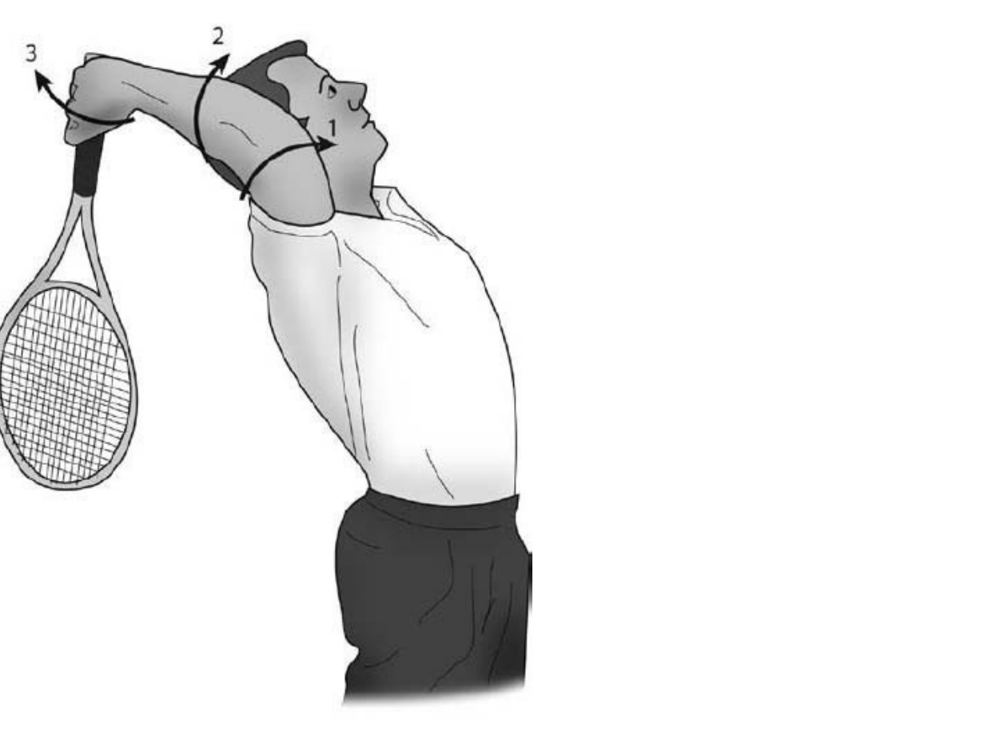
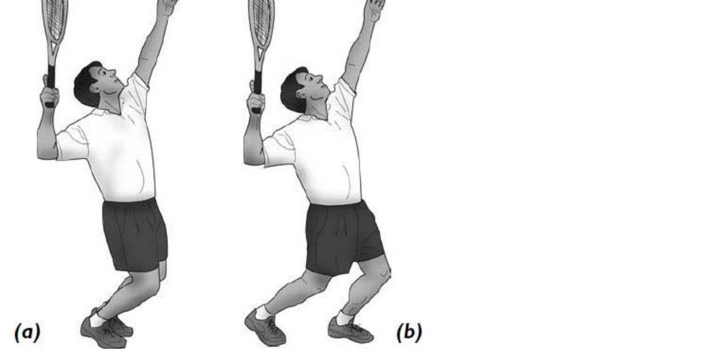
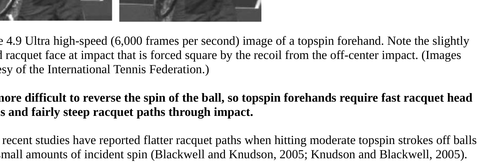

Cuộc Cách Mạng Tư Duy
Trong hơn một thế kỷ, thể thao học đường đã dạy chúng ta nhìn cơ thể như một cỗ máy: xương là đòn bẩy, cơ bắp là động cơ, khớp là bản lề. Mô hình ấy đơn giản, dễ hình dung, và nó giải thích được tại sao ta gãy xương khi té. Nhưng nó không giải thích được một chuyện nhỏ hơn nhiều: vì sao Roger Federer có thể tung cú thuận tay 145 km/h với cánh tay gần như thư giãn hoàn toàn. Máy móc không làm thế. Và cơ thể con người cũng không phải máy móc.
Thực ra, cơ thể là một hệ thống tensegrity (cấu trúc căng-tích hợp) — từ ghép của "tension" (sức căng) và "integrity" (sự toàn vẹn). Kiến trúc sư Buckminster Fuller đặt ra khái niệm này năm 1955, và bác sĩ sinh lý Stephen Levin mang nó vào sinh học năm 1981 dưới tên biotensegrity (sinh-căng-tích hợp). Trong một cấu trúc tensegrity, những thành phần chịu nén — tức xương — không bao giờ chạm nhau trực tiếp. Chúng lơ lửng bên trong một mạng lưới chịu căng liên tục, gồm mạc cơ, gân và dây chằng. Lực không đi qua một điểm duy nhất; nó phân tán đều khắp hệ thống. Hễ một phần bị tác động, toàn bộ hệ thống phản ứng cùng lúc. Hãy nghĩ đến một màng nhện: chạm một sợi, cả mạng rung theo.
Chính từ trực giác này, Viện Nghiên Cứu Quần Vợt Tương Lai đề xuất một khung lý thuyết đột phá gọi là Mô hình Truyền sóng (Wave Transmission Model — WTM). Theo mô hình ấy, cơ thể không phải một cỗ máy cơ khí gồm những mắt xích khô cứng, mà là một trường dẫn sóng đàn hồi phi tuyến liên tục (continuous non-linear elastic waveguide). Toàn bộ khối cơ, gân, xương và đặc biệt là mạng lưới mạc tạo thành một môi trường truyền dao động cơ học tinh vi, nơi năng lượng không được chuyền từng nấc mà được tích lũy, điều chế và đồng bộ hóa qua toàn bộ hệ cân mạc. Mô hình chuỗi động học (kinetic chain) truyền thống vẫn hữu dụng ở mức độ thô, nhưng khi áp vào những cú vung vợt vượt 160 km/h của Carlos Alcaraz hay Jannik Sinner, nó bộc lộ ba nghịch lý không thể bỏ qua. Thứ nhất, thời gian dẫn truyền thần kinh: mỗi nhóm cơ riêng lẻ cần 30–50 miligiây để co hoàn toàn, nên nếu lực phải đi qua 5–6 mắt xích tuần tự, tổng thời gian sẽ là 150–250 miligiây, trong khi toàn bộ cú đánh chỉ diễn ra trong 80–120 miligiây. Thứ hai, tổn thất năng lượng tại khớp: mỗi khớp là một điểm tiêu hao do ma sát, nên truyền lực qua hàng chục khớp xương sẽ làm mất hơn 60% năng lượng gốc từ mặt đất. Thứ ba, chấn thương quá tải khớp: ai cố gồng cứng từng khớp để tạo lực sẽ dồn toàn bộ ứng suất cắt lên sụn vai và dây chằng khuỷu, dẫn đến rách chóp xoay và thoái hóa sớm. Mô hình sóng giải quyết cả ba nghịch lý ấy bằng một cơ chế duy nhất — truyền dao động thay vì chuyền lực.

Và đây là chìa khóa của cuốn sách này: mạc (fascia) chính là siêu dẫn truyền sóng của cơ thể. Cho đến tận thập niên 2000, sách giải phẫu vẫn coi mạc như lớp bao bì vô dụng. Giờ đây, nhờ công trình của Robert Schleip và Helene Langevin, chúng ta biết mạc là cơ quan cảm giác lớn nhất cơ thể và là một mạng lưới truyền lực liên tục, đàn hồi phi tuyến dưới dạng ma trận tinh thể lỏng collagen (liquid crystal collagen matrix). Về vi mô, nó gồm sợi collagen siêu bền chịu kéo tới 120 MPa, sợi elastin đàn hồi, axit hyaluronic (chất bôi trơn giữ tới 6 lít nước trong một gram), và những tế bào cơ sợi co rút chủ động mà không cần tín hiệu thần kinh. Đặc tính đàn hồi của mạc không tuân theo định luật Hooke thông thường mà mang tính phi tuyến: ở tốc độ chậm nó mềm mại, trượt nhẹ và hấp thụ biến dạng không kháng cự; ở xung lực giật nhanh nó lập tức khóa cứng thành một siêu lò xo, truyền năng lượng nguyên vẹn mà không làm biến dạng khớp; và khác với cơ bắp phải tiêu thụ phân tử ATP để co duỗi, mạc tích trữ rồi giải phóng động năng hoàn toàn thụ động theo chu kỳ đàn hồi tự nhiên. Khi axit hyaluronic ở độ nhớt lý tưởng, các lớp mạc trượt êm; khi nó kết tụ vì căng thẳng, lạnh hay ít vận động, sóng truyền đi sẽ mang theo nhiễu.
Mạc còn là một thứ bộ nhớ cơ học. Nó không chỉ truyền lực mà còn lưu trữ thông tin vật lý. Tập một kỹ thuật đúng đủ lâu, mạc tự cấu trúc lại theo hướng tối ưu cho kỹ thuật ấy — đó là lý do vận động viên đỉnh cao có "bộ nhớ cơ thể" sâu hơn người phong trào, và cũng là lý do sau chấn thương, mạc cần từ sáu tháng đến hai năm để phục hồi trọn vẹn. Tập sai liên tục sẽ "lập trình" nó theo chiều hướng xấu.
Trạng thái Tùng — bài học từ Thái Cực Quyền
Trong Thái Cực Quyền, chữ Tùng (松) là nguyên lý cao nhất. Nó không có nghĩa là lỏng lẻo hay yếu ớt. Tùng là một trạng thái thư giãn có chủ đích: không co rút cơ vô ích, nhưng cơ thể vẫn được bành trướng nhẹ về mọi hướng như quả bóng căng, duy trì một áp suất nội tại đủ để sóng lan truyền mà không sinh nhiễu, và sẵn sàng phản ứng tức thì. Phép thử đơn giản: đứng thẳng, thả vai, hít sâu và cảm nhận khoảng không giữa các đốt sống mở ra — đó là lúc mạng tensegrity vận hành tốt nhất.
Trở ngại lớn nhất ngăn cản sự lan truyền sóng đàn hồi chính là hiện tượng co cứng đối kháng (co-contraction): khi lo âu, sợ đánh hỏng hay cố tình dùng sức tay, não bộ đồng thời kích hoạt cả cơ chủ vận lẫn cơ đối vận, hai nhóm tự ghìm chân nhau, tạo nên sự căng cứng nội tại, khóa chặt các khớp và chặn đứng đường đi của sóng cơ học. Năng lượng sinh ra từ mặt đất bị hấp thụ rồi tiêu tán thành nhiệt ngay trong cơ thể, khiến tay vợt nhanh mỏi và gia tăng tối đa nguy cơ viêm gân khuỷu tay tennis. Để sóng truyền thông suốt, cơ thể phải đạt tới trạng thái Phóng Tùng (Sung) — một sự thả lỏng linh hoạt, khớp mở rộng, dây chằng căng nhẹ như dây đàn, nhưng không hề rũ rượi hay yếu ớt. Chỉ khi ấy cơ thể mới biến thành một hệ dẫn sóng hoàn hảo, cho phép năng lượng cơ học luân chuyển với hiệu suất gần như tuyệt đối. Tại sao Tùng lại tạo ra tốc độ? Khi cơ gồng cứng, sợi mạc bị nén, axit hyaluronic bị vắt ra, sóng dội ngược tại những điểm cứng và năng lượng hao phí vào việc chống lại chính sức co của mình. Ở trạng thái Tùng, mạc giãn ra, axit hyaluronic hoạt hóa, sóng lan truyền tự do và năng lượng được chuyển trọn vào quả bóng. Căng là mất lực; buông là có lực.
Bốn đường ray mạc và vai trò của chúng
Nhà nghiên cứu Thomas Myers đã vẽ bản đồ mười hai "đường ray" mạc trong cơ thể người (Anatomy Trains — Bản Đồ Đường Ray Cơ Thể, 2001). Trong tennis, bốn đường quan trọng nhất là: Đường Trước Nông (Superficial Front Line) chạy từ ngón chân lên ngực và đầu, giữ tư thế đứng cùng pha chuẩn bị; Đường Sau Nông (Superficial Back Line) từ lòng bàn chân qua gân Achilles lên cột sống, truyền phản lực mặt đất từ chân lên; Đường Xoắn (Spiral Line) chéo từ vai phải sang hông trái rồi xuống chân phải, tạo ra xoắn và hệ số X (X-Factor); và Đường Tay (Arm Lines) dẫn sóng từ thân qua vai, cánh tay vào tận đầu vợt.
Tại sao người chơi phong trào hay chấn thương
Hơn 80% chấn thương tennis — khuỷu tay tennis, đau vai, căng cơ lưng — đến từ một nguyên nhân chung: phản lực mặt đất không được chuyển hóa qua hệ tensegrity mà đổ thẳng vào xương và khớp. Chuỗi thường đi như sau: gồng cứng cánh tay khi đánh khiến mạc bị nén, sóng từ bóng dội ngược vào khớp thay vì được hấp thụ, gân khuỷu chịu tải liên tục, rồi vi rách sợi collagen dẫn đến viêm gân và khuỷu tay tennis mãn tính. Giải pháp không phải thuốc giảm đau, mà là trả cơ thể về trạng thái Tùng để mạc làm tròn việc hấp thụ tải, bảo vệ gân.
Thay đổi ngôn ngữ huấn luyện
Điều kiện quan trọng nhất với một huấn luyện viên là đổi cách dùng từ. Thay vì ra lệnh kiểu cơ khí — "gập khuỷu tay vào!", "xoay hông mạnh!" — hãy dẫn dắt theo sóng: "để cánh tay rơi tự nhiên, đừng giữ chặt", "để hông dẫn, vai theo sau như đuôi". Gồng là chặn sóng; buông là để sóng đi qua. Sự khác biệt giữa một tay vợt nghiệp dư và một bậc thầy nằm trọn ở cơ chế truyền này: xung sóng cơ học vượt qua toàn thân chỉ trong 20–30 miligiây, so với 150–200 miligiây của chuỗi cơ khí tuần tự. Toàn thân duy trì trạng thái đàn hồi lỏng lẻo nhưng gắn kết — chính là tensegrity — và năng lượng được giải phóng tự động qua cơ chế hồi phục đàn hồi của cân mạc, biến cú đánh thành một cú quất roi không trọng lượng nhưng mang sức công phá hủy diệt. Toàn bộ cuốn sách này sẽ quay lại ý tưởng ấy, chương qua chương, trên từng phần của cú đánh.

Pin Trái Đất – Phản Lực Mặt Đất
Mọi lực trong tennis đều bắt đầu từ đất, không phải từ tay. Khi bạn bước vào cú đánh, bàn chân đặt xuống và mặt sân đẩy ngược lại — đó là lực phản hồi mặt đất (Ground Reaction Force — GRF). Nó là viên pin nguyên tử của cú đánh: nguồn năng lượng gốc mà không một cơ bắp riêng lẻ nào trên cơ thể tạo ra được. Vận động viên giỏi không "đánh mạnh hơn"; họ chỉ biết cách giải phóng viên pin này hiệu quả hơn. Theo Mô hình Truyền sóng, khoảnh khắc bàn chân đạp xuống không đơn thuần là điểm khởi đầu của một đòn bẩy, mà là một sự kiện phát sinh sóng phản lực mặt đất (Ground Reaction Wave — GRW): năng lượng ấy lập tức bắt đầu hành trình lan truyền qua cơ thể dưới ba dạng sóng cơ bản.
Sóng thứ nhất là sóng nén (compression wave). Nó phát sinh ngay khi chân tiếp đất, nén trọng lượng cơ thể xuống mặt sân cứng. Phản lực mặt đất tạo ra một sóng áp suất truyền dọc theo trục xương cẳng chân, đùi và cột sống. Vì mô xương và màng xương có mật độ phân tử cao, sóng nén lan truyền với vận tốc cực nhanh, khoảng 1.500 m/s, đóng vai trò như một tín hiệu kích hoạt toàn hệ thống trước khi bất kỳ cơ bắp nào kịp co lại. Sóng thứ hai là sóng xoắn (torsion wave). Khi sóng nén chạm tới khung chậu, góc đặt của bàn chân và sự lệch pha giữa hai trục chân chuyển hóa nó thành một mô-men xoắn quay tròn, vặn xoắn cột sống thắt lưng và kéo căng toàn bộ dải cân ngực-lưng (thoracolumbar fascia — TLF). Đây là nơi cơ thể nạp năng lượng đàn hồi khổng lồ, tựa như vặn xoắn một sợi dây cao su chịu tải cao. Sóng thứ ba là sóng trượt (shear wave). Khi sóng xoắn chạm tới khớp vai và đai ngực, nó bẻ góc 90 độ để chuyển thành sóng trượt chạy dọc theo cánh tay đến đầu vợt. Khi ấy vai không đóng vai trò phát lực mà là một "bộ đổi hướng sóng": cánh tay thả lỏng hoàn toàn hoạt động như một sợi dây thừng, biên độ dao động tăng dần theo chiều dài và đạt cực đại ngay tại tâm mặt vợt.

GRF không phải một luồng thẳng. Hình dạng của nó tuỳ thuộc vào cách bạn tiếp đất. Ở tư thế mở (open stance, 45–90 độ so với vạch cuối), GRF chuyển thẳng thành xoay ngang — lý tưởng cho thuận tay tốc độ cao. Ở tư thế nửa mở (30–45 độ) nó cân bằng giữa xoay và đẩy tới, linh hoạt nhất. Ở tư thế đóng (vuông góc), GRF hóa thành đẩy mạnh về phía trước — tốt cho trái tay slice. Và trong cú scissor kick, bạn không tiếp đất khi đánh, nên GRF được tạo ra từ đà trước đó, cho thời gian phản ứng dài hơn. Chọn điểm tiếp đất, tức là đặt "nút sóng" đầu tiên, quyết định hướng viên pin phóng năng lượng vào cú đánh.
Mạc biến GRF thành sóng dọc
Bàn chân chạm đất chỉ là khởi đầu. Cái kỳ diệu nằm ở chỗ mạc tiếp nhận sóng nén và biến nó thành sóng dọc chạy lên cột sống. Quá trình diễn ra trong một nhịp thời gian rất hẹp: từ 0 đến 30 miligiây, bàn chân đặt xuống, cơ và mạc chuẩn bị nhận tải; từ 30 đến 80 miligiây, GRF đạt đỉnh, mạc co giãn và lưu trữ thế năng đàn hồi; từ 80 đến 130 miligiây, mạc bung ra, thế năng hóa thành sóng dọc đi lên. Nếu bạn duỗi quá sớm — trước khi bàn chân ổn định — bạn mất GRF, sóng yếu và mất kiểm soát. Nếu duỗi quá trễ — sau khi hông đã xoay — chuỗi truyền bị phá vỡ, lực "gãy" tại hông. Đó là lý do bước chân êm, không tiếng động, là bằng chứng mạc đang làm việc hoàn hảo.
Triple joint extension — cái công tắc
Sức mạnh thực sự đến từ sự đồng bộ của ba khớp: cổ chân, gối và hông, giãn rồi co cùng nhịp để bắn sóng dọc lên. Đây là "công tắc" mà vận động viên đỉnh cao bật lên vô thức. Nhưng sóng chỉ đi tiếp nếu đường truyền thông suốt: cổ chân hơi gập tự nhiên làm bộ giảm chấn đầu tiên; gối hơi gập khoảng 20 độ hấp thụ GRF từ dưới; cột sống trung lập, cong sinh lý, để sóng không bị gãy; hông trung lập khi đứng, gập khi đánh, là điểm chuyển hóa từ sóng dọc sang sóng ngang. Khóa gối thẳng hoàn toàn, ưỡn lưng, hay gồng cổ chân đều làm sóng "rò rỉ" hoặc "khóa", và năng lượng bay mất.


Tóm lại, sự khởi đầu của mọi cú đánh là một sự kiện sóng, không phải một cú đẩy cơ bắp. Lực phản hồi mặt đất sinh ra sóng nén, sóng nén hóa sóng xoắn tại khung chậu, sóng xoắn hóa sóng trượt tại vai, và sóng trượt bùng nổ ở đầu vợt. Mạc là bộ biến đổi, triple joint extension là công tắc, và sự im lặng của bước chân là thước đo hiệu quả. Footwork không phải chạy nhanh, mà là đặt đúng nút sóng để định hướng sóng vào cú đánh.
Nút Sóng – Trạm Biến Áp Sinh Học
Trong mô hình máy móc, khớp là bản lề — một điểm chuyển hướng cứng. Trong mô hình sóng, khớp là nút sóng (wave node): một trạm biến áp sinh học nơi xung lượng được tiếp nhận, đổi hướng và truyền tiếp mà không rò rỉ. Đặt một khớp đúng vị trí, và phản lực từ quả bóng tự triệt tiêu; đặt sai, và sóng dội ngược vào chính bạn dưới dạng chấn thương. Khi sóng tới (incident wave) chạy lên từ mặt đất gặp sóng phản xạ (reflected wave) dội từ đầu vợt, chúng giao thoa và tạo thành một hệ sóng đứng (standing wave system). Trong hệ ấy, nút sóng là những vị trí có biên độ dao động bằng không nhưng chịu áp suất cơ học và mật độ thế năng cực đại. Ở một cú đánh chuẩn, các điểm nút tự nhiên nằm tại bàn chân tiếp xúc mặt đất, tại trục quay trung tâm của khung chậu (Đan Điền), tại khớp ổ chảo vai và tại điểm cán vợt trong lòng bàn tay. Giữ vững những điểm nút này — không để trục cơ thể nghiêng ngả — chính là nghệ thuật của một vận động viên thượng thừa.
Vị trí nút sóng ở từng khớp
Mỗi khớp có một "vị trí vàng" để sóng đi qua tự do. Cổ tay hơi gấp tự nhiên khoảng 15 độ, không gồng, để sóng từ vợt không truyền ngược vào cẳng tay. Khuỷu hơi gập khoảng 150 độ, vai thư giãn, ngăn chặn khuỷu tay tennis hiệu quả. Vai là nút sóng quan trọng nhất của cánh tay: ổ chão thư, không gồng, để sóng xoắn ISR đi qua tự do. Cột sống trung lập, giữ độ cong sinh lý, để GRF truyền thẳng không bị gãy. Hông trung lập khi đứng, gập khi đánh, là điểm chuyển hóa từ sóng dọc sang sóng ngang. Đầu gối hơi gập 20 độ, không khóa, hấp thụ GRF từ phía dưới. Và cổ chân hơi gập lưng bàn chân tự nhiên, làm bộ giảm chấn đầu tiên trong chuỗi. Nếu một điểm nút bị trượt — mất thăng bằng chân trụ hay xoay hông mất kiểm soát — toàn bộ hệ sóng đứng sẽ sụp đổ và năng lượng vung vợt tiêu tán ngay lập tức.
Cán vợt tương tác với nút sóng
Mỗi kiểu cầm vợt đặt tay ở một vị trí khác nhau so với nút sóng của cẳng tay, nên phù hợp với một cú đánh khác nhau. Continental để tay ở bevel 2, gần điểm nút nhất — kiểm soát cao, dùng cho giao bóng, volley và slice. Eastern Forehand ở bevel 3, hơi xa điểm nút — thuận tay tốc độ trung bình, flat và topspin nhẹ. Semi-Western ở bevel 4 — thuận tay topspin mạnh, phổ biến nhất hiện đại. Western ở bevel 5, xa điểm nút nhất — topspin cực mạnh nhưng đòi hỏi timing chính xác hơn. Chọn grip không phải sở thích, mà là chọn cách bàn tay giao tiếp với nút sóng.
Nút sóng thần kinh
Cơ thể không chỉ có nút sóng khớp. Hệ thần kinh cũng vậy. Hạch nền (basal ganglia) lọc các tín hiệu vận động không cần thiết, chỉ cho phép những lệnh tối ưu đi qua — nó là "bộ lọc tự động" của vận động viên đỉnh cao. Tiểu não (cerebellum) điều chỉnh timing và phối hợp, để mọi cú đánh có nhịp điệu hoàn hảo mà không cần suy nghĩ. Tủy sống xử lý các phản xạ cơ bản tại chỗ, không đợi não bộ, rút ngắn thời gian phản ứng xuống 50–80 miligiây. Phản xạ giãn tủy sống (spinal stretch reflex) thậm chí giúp cơ thể tự động phản ứng với tốc độ bóng đối thủ nhanh hơn xử lý của vỏ não tới 80 miligiây. Khi ba trạm này hoạt động nhịp nhàng, sóng thần kinh truyền sạch từ ý định đến động tác.
Khi nào nút sóng bị hỏng
Hầu hết cơn đau đến từ nút sóng bị khóa. Cổ tay đau sau khi đánh thường vì bạn nắm vợt quá chặt — hãy nới lỏng lực cầm 20%, để cổ tay trôi tự nhiên. Khuỷu đau khi đánh trái tay thường vì vai gồng — hơi gập khuỷu, vai thư, để cánh tay treo tự nhiên. Vai đau sau nhiều cú giao bóng nghĩa là ổ chão đang gồng — hãy nhớ vai phải là nút sóng, thư nó ra để ISR tự xoay. Lưng đau khi đánh overhead thường vì cột sống không trung lập — giữ nó thẳng tự nhiên, đừng ưỡn quá mức. Mọi lỗi đều có cùng một gốc: gồng là cứng, cứng là sóng bị dội.

Bụng Sóng & Phát Kình (Fajin)
Nếu nút sóng là điểm tĩnh tại, thì bụng sóng (antinode) là điểm đối lập hoàn toàn: nơi biên độ dao động đạt cực đại. Trong một cú đánh tennis, mục tiêu tối thượng là ở thời điểm vợt chạm bóng, đầu vợt phải đang ở trạng thái bụng sóng — nơi năng lượng bùng nổ mạnh nhất. Hiểu được cặp bài trùng nút–bụng sóng này là hiểu được tại sao cùng một lực đầu vào lại ra những cú đánh hoàn toàn khác nhau. Bụng sóng tiêu biểu nằm tại đầu gối khi co duỗi nạp lực, tại cơ chéo bụng khi vặn xoắn, và đặc biệt tại đỉnh đầu vợt khi nó được giải phóng theo quỹ đạo hình quạt. Một vận động viên thượng thừa là người giữ vững các điểm nút trong khi cho phép các bụng sóng dao động tự do với vận tốc cực hạn.
Sóng đứng trong cú đánh
Sóng đứng xuất hiện khi hai làn sóng ngược chiều, cùng tần số, gặp nhau và cộng hưởng (resonance). Trong cú đánh, có hai sóng như thế. Sóng dọc xuất phát từ phản lực mặt đất, chạy dọc theo cột sống. Sóng ngang sinh ra từ chuyển động xoay của hông và vai. Khi hai sóng này gặp nhau với timing chính xác tại vùng vai và cánh tay, chúng tạo ra sóng đứng. Tại bụng sóng — tức đầu vợt — biên độ cộng hưởng lớn hơn hẳn tổng hai biên độ cộng lại. Đó là lý do Federer tạo ra cú forehand 130 km/h bằng cánh tay dường như rất nhẹ nhàng: anh ta không đánh bằng tay, anh ta để hai sóng cộng hưởng tại đầu vợt.
Cơ chế Phát Kình (Fajin)
Fajin là khái niệm trong võ thuật Trung Hoa mô tả việc giải phóng năng lượng cực kỳ nhanh và mạnh. Vật lý đằng sau nó đơn giản: nếu sóng dọc có biên độ A1 và sóng ngang có biên độ A2, khi cộng hưởng hoàn hảo, biên độ tổng bằng A1 + A2; nhưng trong hệ phi tuyến của cơ thể, thực tế thường đạt lớn hơn thế. Phân tích bằng cảm biến gia tốc và điện cơ đồ (EMG) cho thấy trình tự của một võ sư Thái Cực đỉnh cao và một tay vợt thượng thừa (như Roger Federer với cú forehand lướt êm) có sự tương đồng kinh ngạc, gồm bốn giai đoạn. Đầu tiên là pha tích lũy (storage phase): hạ trọng tâm, đưa cơ thể vào trạng thái chìm sâu, toàn bộ khối cơ ngoài thả lỏng để trọng lực kéo căng các dải cân mạc bên trong như cánh cung giương. Tiếp đến là pha khởi sóng (wave genesis): bàn chân sau đạp đất đột ngột mà không gồng đùi, phản lực mặt đất tạo sóng nén truyền thẳng đứng lên xương chậu. Giai đoạn ba là điều chế xoay (torsional modulation): khung chậu xoay mở, truyền xung lực vào ngã tư dải cân ngực-lưng, năng lượng được gia tốc nhờ góc tách biệt vai-hông. Cuối cùng là bộc phát và triệt tiêu (release & wave termination): sóng trượt lan dọc cánh tay thả lỏng và bùng nổ tại bề mặt tiếp xúc. Toàn bộ chu trình giải phóng năng lượng diễn ra trong chưa đầy 25–30 miligiây — nhanh hơn bất kỳ ý thức nào kịp theo.
Hiệu ứng roi quất (passive whip)
Đây là một trong những ý tưởng khó chấp nhận nhất nhưng quan trọng nhất của tennis hiện đại: cánh tay không tạo ra lực. Cánh tay chỉ là cái roi. Khi bạn vung roi, tay cầm roi chuyển động chậm nhưng đầu roi đạt tốc độ siêu thanh. Trong cú đánh, thân tạo ra sóng, và cánh tay thụ động để sóng "quất" đầu vợt. Cổ tay khóa cứng khi tiếp bóng (kiểu thuận tay cổ điển) chặn hiệu ứng này; cổ tay thư giãn, quất tự nhiên tại điểm tiếp xúc (kiểu hiện đại), mới giải phóng được sức mạnh. Đó là khác biệt giữa một cú đạt 80–90 km/h và một cú vượt 130 km/h với cùng một lực gắng sức.
Sự kiện kết thúc sóng tại điểm chạm bóng
Thời gian bóng nén vào mặt lưới vợt chỉ kéo dài 3,5 đến 4,5 miligiây — một khoảng siêu ngắn mà không mệnh lệnh thần kinh nào từ não bộ kịp can thiệp. Cú đánh hoàn toàn là một sự kiện kết thúc sóng (wave termination event). Tại khoảnh khắc tiếp xúc, đỉnh của sóng trượt cơ học phải đến đúng tâm mặt vợt (điểm ngọt — sweet spot), trùng khít với lúc quả bóng đạt độ nén tối đa trên dây. Khi sự đồng bộ pha này diễn ra, hiệu suất chuyển giao xung lượng đạt cực đại: gần 90% động lượng tích tụ hóa thành vận tốc và tốc độ xoáy (vòng/phút — RPM) của quả bóng; phản lực dội ngược lên cơ thể bị triệt tiêu, vận động viên cảm thấy mặt vợt "êm như lướt qua bơ", không hề tức giật ở cổ tay hay khuỷu; và năng lượng dư thừa được tiêu tán êm ái dọc đường cong xoắn ốc của vòng lặp số 8, bảo vệ tuyệt đối bao khớp chóp xoay.


Ba bậc thầy dưới lăng kính cơ học sóng
Nếu nhìn qua lăng kính truyền sóng, ba tay vợt hay nhất thế hệ này hiện ra như những kiểu dáng sóng khác nhau. Roger Federer là bậc thầy sóng đứng, giữ trục đầu và cổ bất động tuyệt đối tại điểm tiếp xúc, dùng cơ chế thẳng tay với biên độ sóng dài và sự thả lỏng cổ tay cực độ để tạo cảm giác thanh thoát vô trọng lực. Carlos Alcaraz sở hữu sóng nén bộc phát siêu nhanh, tích lực đạp đất cực sâu từ tư thế chân mở rộng, tận dụng tối đa phản lực mặt đất và độ đàn hồi của dải chéo trước để bứt lên từ những vị trí phòng thủ sâu ngoài sân. Jannik Sinner lại là hiện thượng trượt pha có kiểm soát tối ưu: thân hình mảnh mai đóng vai trò hệ dẫn sóng hẹp trở kháng thấp, năng lượng truyền qua cánh tay như một sợi roi da mềm, đưa tốc độ bóng bình quân lên mức cao nhất thế giới. Cùng một vật lý, ba nhịp sóng, và ở tất cả họ, bụng sóng đều bùng nổ tại đầu vợt vào đúng cửa sổ 4 miligiây ấy.
X-Factor & Cửa Sổ Thế Năng 40–80ms
X-Factor là độ chênh lệch góc giữa hông và vai tại thời điểm vào cú đánh — hay nói theo ngôn ngữ cơ học sóng, là góc tách biệt vai-hông (hip-shoulder separation angle). Hãy hình dung nó như một cánh cung: hông và vai xoay ngược chiều nhau, và sự căng giữa chúng tích lũy thế năng đàn hồi trong mạc cơ chéo (dải chéo trước — Anterior Oblique Sling, AOS). Vận động viên giỏi không xoay hông và vai cùng lúc; họ "nạp" năng lượng vào mạng mạc, rồi thả lỏng để nó bắn ra.
Cửa sổ vàng 40–80 miligiây
Sức mạnh của X-Factor nằm ở timing. Sau khi chân đạp đất, vai phải "bị trễ" lại phía sau hông đúng một khoảng — và cửa sổ vàng để giữ sự trễ ấy là 40 đến 80 miligiây. Trong khoảng đó, AOS bị kéo căng tối đa, tích lũy thế năng. Nếu vai xoay cùng lúc với hông, X-Factor biến mất, mọi thế năng bay hơi. Nếu vai trễ quá lâu, chuỗi bị đứt, lực gãy tại hông. Cửa sổ 40–80ms là lúc cung được giương căng nhất trước khi tên bay.
Sụp đổ sóng và trượt pha có kiểm soát
Cơ chế tinh vi hơn đằng sau X-Factor chính là hiện tượng sụp đổ sóng (wave collapse) và trượt pha có kiểm soát (controlled phase delay). Thay vì tất cả các bộ phận cùng chuyển động một lúc, mỗi phân đoạn cơ thể trễ hơn phân đoạn liền trước khoảng 15–25 miligiây, tạo nên một hiệu ứng cộng hưởng theo cấp số nhân. Khung chậu xoay trước (pha 0 miligiây); lồng ngực và dải cân ngực-lưng bắt đầu xoay trễ hơn 20 miligiây; cánh tay trên và khuỷu bị kéo đi trễ hơn 40 miligiây; cẳng tay và cổ tay ngửa ra phía sau (pha tích lũy — loading phase) trễ hơn 60 miligiây; và đầu vợt vút lên tiếp xúc bóng trễ hơn 80–85 miligiây. Khi phân đoạn lớn hơn (hông, thân) đột ngột hãm tốc độ quay, toàn bộ động lượng không biến mất mà bị dồn nén và truyền tức thì sang phân đoạn nhỏ hơn, nhẹ hơn (cánh tay, cẳng tay, vợt). Đây chính là bí mật giúp những tay vợt có thể hình thanh mảnh như Jannik Sinner tạo ra tốc độ bóng khủng khiếp mà không cần cơ bắp hộ pháp.
Lực đàn hồi phi tuyến
Điều thú vị của mạc là tính phi tuyến: càng kéo căng đúng cách, lực bật ra càng vượt mong đợi. Vận động viên đỉnh cao dùng AOS như một lò xo — họ nạp năng lượng vào mạc cơ chứ không co cơ. Khi lò xo thả, nó trả lại nhiều hơn những gì gàng buộc nó. Đó là lý do cùng một chuyển động, người này bóng chạy 90 km/h, người kia 130 km/h: không phải một bên khỏe hơn, mà một bên tích và thả thế năng đàn hồi tốt hơn.
Lỗi "cùng lúc" và cách sửa
Lỗi phổ biến nhất ở người phong trào là xoay hông và vai đồng thời — một phản xạ có vẻ "mạnh mẽ" nhưng triệt tiêu hoàn toàn X-Factor và xóa bỏ trượt pha có kiểm soát. Sửa bằng cách chậm lại: đạp chân, để hông đi trước, cảm nhận vai còn lại phía sau, rồi mới thả. Trong cú thuận tay tay phải, trình tự diễn ra thế này — chân trái đạp đất đẩy GRF lên bên trái; hông trái đẩy tới, kéo căng AOS từ hông trái lên vai phải; hông phải xoay, kéo căng thêm AOS từ hông phải đến vai trái; vai phải được bắn ra bởi AOS đàn hồi, kích hoạt ISR; và sóng truyền ra đầu vợt. X-Factor là cánh cung, 40–80ms là cửa sổ vàng, sụp đổ sóng là nhịp trễ 15–25ms giữa các phân đoạn, elite nạp vào mạc chứ không co cơ, và xoay cùng lúc là tự hủy.
Hệ Thống Mạch (Sling Systems)
Nếu X-Factor là một lò xo được giương căng, thì hệ thống mạch (sling systems — những dải cơ-mạc chéo nối dài) là những xa lộ dẫn sóng xuyên suốt cơ thể. X-Factor tích năng lượng, nhưng chính các mạch này mới là đường mà năng lượng ấy chạy qua, từ mặt đất lên đầu vợt. Có bốn hệ mạch chính, và hiểu chúng là hiểu tại sao một cú đánh có thể "nhẹ mà nặng".
Bốn hệ mạch chính
Hệ chéo trước (Anterior Oblique Sling — AOS) nối hông bên này với vai bên kia qua lõi thân. Nó quan trọng nhất cho mọi cú xoay, vì chính nó tích thế năng đàn hồi khi hông và vai lệch pha. Hệ chéo sau (Posterior Oblique Sling — POS) gồm cơ lưng rộng và cơ mông đối diện, có nhiệm vụ ổn định cú đánh và bảo vệ cột sống ở pha kết thúc. Hệ dọc (Deep Longitudinal Sling — DLS) chạy dọc theo cột sống, truyền phản lực mặt đất lên cánh tay không thuận. Và hệ vòng hông (Lumbo-Pelvic Sling — LS) giữ nền tảng hông vững chắc để sóng có điểm tựa bùng nổ.
Chúng kích hoạt ra sao trong một cú đánh
Hãy theo dõi thứ tự: ở nhịp lùi vợt, POS tích năng lượng qua xoắn lưng. Sang giai đoạn chuyển đổi, AOS bị kéo căng qua lõi, tạo thế năng đàn hồi khổng lồ. Khi vung vợt, DLS truyền phản lực mặt đất lên cánh tay không thuận, còn LS giữ hông ổn định làm nền cho sóng bùng nổ. Ở pha theo sau, AOS và POS kết hợp, hoàn trả năng lượng và bảo vệ cột sống. Bốn hệ không làm việc độc lập; chúng là một dàn nhạc, và cú đánh là bản giao hưởng.
Đan Điền — trạm biến áp trung tâm
Giữa các hệ mạch là Đan Điền, vùng sâu dưới rốn, nơi lõi cơ thể nén sóng trước khi phóng Fajin. Nó không thể bị bỏ qua: mọi sóng dọc từ chân lên đều đi qua đây, được cô đặc rồi bắn ra. Tập sai — chỉ tập cơ nông, co rút từng khối riêng lẻ — sẽ bỏ qua Đan Điền, và sóng mất lực ngay tại lõi. Tennis là vận động ba chiều, không phải trên một mặt phẳng, nên tập luyện phải phản ánh sự đa chiều ấy.
Năm điều cốt lõi: bốn hệ mạch là xa lộ dẫn sóng; AOS quan trọng nhất cho xoay; POS bảo vệ cột sống; Đan Điền là trạm biến áp không thể thiếu; và vì tennis là 3D, tập luyện phải đa mặt phẳng.
ISR – Động Cơ Ẩn
Xoay trong vai (Internal Shoulder Rotation — ISR) là "động cơ ẩn" mạnh nhất của chuỗi truyền sóng. Nó đóng góp tới 40% lực của cú giao bóng và 30% của cú thuận tay, dù hầu hết người chơi thậm chí không biết nó tồn tại. Ở giao bóng, vận động viên đỉnh cao đạt vận tốc góc ISR 2500–3000 độ/giây; ở thuận tay, 1800–2500 độ/giây. Chỉ trong 80–120 miligiây, ISR một mình tạo ra 15–25 m/s (54–90 km/h) tốc độ đầu vợt.
Sóng xoắn từ ISR
Cái kỳ diệu của ISR là nó truyền năng lượng theo đường xoắn ốc, không phải đường thẳng. Từ vai, sóng xoắn chạy qua cánh tay trên, xuống cẳng tay, và ra đầu vợt. Khi ISR hoạt động, đầu vợt vẽ một cung tròn từ dưới lên — đúng bản chất của bụng sóng. Nhưng ISR cực kỳ nhanh, nhanh hơn bất kỳ ý thức nào của con người kịp theo. Nó phải là phản xạ tự động, không phải lệnh có chủ ý.
ISR bị chặn bởi gồng tay
Vì ISR nhanh đến thế, chỉ một chút gồng cứng cũng đủ chặn nó. Vai phải là nút sóng — thư giãn ổ chão để ISR xoay tự do; gồng cứng là đóng cửa. Cánh tay phải thả lỏng: nắm vợt chặt, cơ cẳng tay co rút, và sóng xoắn dội ngược vào vai thay vì ra đầu vợt. Đó là lý do nhiều người giao bóng đau vai — không phải họ yếu, mà là họ gồng, khóa mất động cơ ẩn. Buông, để vai làm nút sóng, và ISR tự nhiên làm phần việc của nó.
Ba điều nên nhớ: ISR đóng góp 40% lực giao bóng; nó nhanh hơn nhận thức con người nên phải là phản xạ; và nó bị chặn ngay khi bạn gồng tay hay gồng vai.
Quiet Eye & Thần Kinh Học
Sóng không chỉ chạy trong cơ thể; nó chạy trong đầu. Ánh mắt tĩnh lặng (Quiet Eye — QE) là kỹ năng giữ mắt cố định vào một điểm mục tiêu trong một khoảng thời gian xác định, trước khi hành động. Nó không phải tài năng bẩm sinh, mà là kỹ thuật có thể luyện. Mắt tĩnh dẫn đến não tĩnh, và não tĩnh tạo ra một nút sóng thần kinh cho toàn bộ hệ thống.
Kẻ thù tên là VOR
Cơ chế phá hoại mang tên phản xạ tiền đình — mắt (Vestibulo-Ocular Reflex — VOR). Khi đầu bạn di chuyển trong lúc vung vợt, VOR kích hoạt trong 5–10 miligiây, não lập tức ra lệnh "giảm ga" cho cơ vai và cổ để ổn định đầu, cơ vai hơi gồng, và bạn mất 10–20% lực. Giải pháp đơn giản đến mức ngạc nhiên: giữ đầu tĩnh lặng. Đầu không di chuyển, VOR không kích hoạt, ISR tự do, và lực đạt tối đa. Đó là lý do vận động viên đỉnh cao có vẻ "đứng yên" ở cổ ngay cả khi toàn thân bùng nổ.
Tập trung bên ngoài, không bên trong
Nghiên cứu nhất quán chỉ ra tập trung bên ngoài (external focus) tốt hơn bên trong (internal focus). Đừng nghĩ về cổ tay, đừng nghĩ về gập khuỷu, đừng kiểm soát từng cơ — hãy để "cảm giác" dẫn dắt chuyển động, và tập trung hoàn toàn vào quả bóng. Cụ thể: nhìn thấy đường chỉ của bóng cho đến khi nó chạm vợt; khi mất kiểm soát vì áp lực, tìm một điểm trên bóng và đừng rời mắt; đánh cổ tay quá sớm thì nhìn nơi bóng sẽ nảy, không nhìn vợt; và trước điểm quan trọng, hãy nhìn vào đường chỉ may của bóng — đó là neo định tâm trí.
Trọng tâm khối lượng và Đan Điền thần kinh
Về mặt thần kinh, sự ổn định thực sự bắt nguồn từ trọng tâm khối lượng (centre of mass — COM): một điểm tưởng tượng nằm sâu trong khung chậu, ngay tại vùng Đan Điền. Khi COM được giữ tĩnh tại trong lúc đầu bạn cũng tĩnh, hệ tiền đình không có lý do để kích hoạt VOR, và sóng thần kinh truyền sạch từ ý định đến động tác. Mệnh Môn — điểm giữa thắt lưng — đóng vai trò như một bản lề áp suất: giữ nó trung tính là giữ toàn bộ mạng cân mạc dưới sức căng tối ưu. Đó là lý do một vận động viên thượng thừa dường như "đứng yên ở giữa" ngay cả khi chân và vai đang bùng nổ.
Hạch nền (basal ganglia) là bộ phận tự động hóa quá trình này: luyện đủ nhiều, nó "tiếp quản" từ ý thức, giải phóng bạn khỏi phải nghĩ. Năm điều cốt lõi: QE là kỹ năng luyện được; mắt tĩnh sinh sóng thần kinh tĩnh; VOR là kẻ thù; tập trung bên ngoài thắng bên trong; và COM tĩnh tại là nền của tất cả.
Differential Learning & Thể Lực Hệ Mạc
Nếu các chương trước là về cấu trúc, chương này là về thời gian. Mạc cơ không thay đổi qua lặp lại đơn thuần; nó tái cấu trúc qua biến thiên. Đó là nguyên lý học tập vi phân (Differential Learning — DL): thay đổi điều kiện liên tục cho kết quả tốt hơn là lặp lại một động tác hàng ngàn lần giống hệt.
Hiệu ứng ná lò xo và bốn nguyên tắc
Mạc hoạt động như một ná lò xo — nó bắn sóng mạnh hơn khi được kéo căng đúng cách trước đó. Bốn nguyên tắc của thể lực hệ mạc (Fascial Fitness) theo đó là: kéo căng trước (pre-stretch), lưu trữ đàn hồi, giữ đủ nước (hydration), và kết hợp chậm với động (slow + dynamic). Khởi động mạc cơ động — foam roll, dao động, đung đưa con lắc — đánh thức hệ thống trước tập. Động tác đàn hồi kiểu plyometric, như nhảy pogo, huấn luyện mạc bật lại. Kéo giãn chậm 90–120 giây mỗi vùng giúp tái cấu trúc collagen. Và chuyển động xoay quyền lực — tạ y tế (medicine ball), chặt cáp (cable chop) — kích hoạt AOS và POS.
Chu kỳ co-duỗi (Stretch-Shortening Cycle)
Động cơ bật lại của mạc gắn liền với chu kỳ co-duỗi (Stretch-Shortening Cycle — SSC): một cơ hoặc dải mạc bị kéo giãn nhanh (pha đàn hồi), rồi co ngắn ngay sau đó (pha bùng nổ), tận dụng năng lượng đàn hồi vừa lưu trữ. Đó là cơ chế khiến bạn nhảy cao hơn khi có bước đà lùi nhỏ, và khiến cú vung vợt mạnh hơn khi gối và hông kịp "nhún" trước khi bắn sóng lên. SSC bảo toàn khớp tuyệt đối: thay vì dùng sức cơ để hãm rồi đẩy, bạn để mạc hấp thụ rồi trả lại — khớp không gánh va đập. Một quả giao bóng tốt là một chu kỳ co-duỗi hoàn hảo từ mũi chân đến đầu vợt.
Thời gian tái cấu trúc
Đây là phần kiên nhẫn nhất. Cơ bắp tái cấu trúc trong 2–6 tuần; gân mất 3–6 tháng; nhưng mạc cần từ sáu tháng đến hai năm. Sụn khớp tính bằng năm. Nhiều người bỏ cuộc vì họ đo lường tiến bộ bằng cơ bắp, trong khi sóng sống trong mạc. Tiêu chuẩn thực sự rất đơn giản: di chuyển không tiếng động trên sân là bằng chứng mạc đang hoạt động tốt.
Mười bài tập cảm thụ sóng
Để "nghe" được sóng thay vì chỉ đánh mạnh, hãy luyện mười bài tập thực chiến: (1) bước êm — đánh mà gót chân không gây tiếng động; (2) thả vai — treo cánh tay như quả lắc trước khi vung; (3) nhún không gồng — hạ gối 20 độ rồi bắn lên không xiết chặt; (4) xoắn lõi — xoay hông-trước vai, giữ 40–80ms; (5) roi thụ động — vung cẳng tay thả lỏng, để đầu vợt tự vút; (6) điểm ngọt — chạm bóng vào giữa mặt vợt, không cổ tay; (7) Đan Điền đẩy — cảm nhận áp suất dưới rốn khi đạp đất; (8) mắt tĩnh — giữ ánh mắt cố định 400–500ms trước bóng; (9) phân đoạn trễ — để hông đi trước, vai theo sau một nhịp; (10) hồi phục — sau cú, thả lỏng hoàn toàn, không gồng theo.
Giáo án năm tuần
Một giáo án thực tế kéo dài năm tuần: tuần 1–2 chỉ làm quen — nhận biết GRF, trạng thái Tùng và Đan Điền, không ép lực; tuần 3–3 tập trung vào X-Factor và ISR qua bài tập xoắn lõi; tuần 4 đưa SSC và thể lực hệ mạc vào (plyometric, foam roll, chặt cáp); tuần 5 lồng ghép Quiet Eye và học tập vi phân — mỗi lần tập lại đổi góc, tốc độ và điểm tiếp xúc để mạc học qua biến thiên, không qua lặp lại máy móc.
Ba điều nên nhớ: biến đổi thắng lặp lại; mạc là ná lò xo, bắn mạnh hơn khi được nạp đúng; và sáu tháng đến hai năm là con số thực tế cho mạc — kiên nhẫn là chìa khóa.
Tinh – Khí – Thần
Mười chương qua, chúng ta đã đi từ cái nhìn cơ khí đến một cái nhìn sóng. Mạng căng-tích hợp cho thấy cơ thể là mạng lưới, không phải máy móc. Phản lực mặt đất là viên pin. Nút sóng và bụng sóng là trạm biến áp và điểm bùng nổ. X-Factor, hệ mạch và ISR là những đường truyền. Quiet Eye và học tập vi phân là cách ta huấn luyện hệ thống ấy. Chương cuối gom tất cả lại dưới một khung ba lớp của võ thuật cổ: Tinh, Khí, Thần — cơ thể, năng lượng, và tâm trí.
Cơ thể, năng lượng, tâm trí trong một nhịp
Tinh là cơ thể — mạng mạc, khớp nút sóng, và sự thư giãn Tùng. Khí là năng lượng — sóng chạy từ đất lên vợt, Fajin bùng nổ, hơi thở và áp suất nội tại giữ màng lưới căng. Thần là tâm trí — Quiet Eye, hạch nền tự động hóa, và trạng thái Flow nơi bạn không còn suy nghĩ. Ba lớp không tách rời: một cơ thể căng cứng (Tinh hỏng) sẽ rò rỉ năng lượng (Khí yếu), và tâm trí vội vàng (Thần loạn) sẽ kích hoạt VOR, gặm mòn lực. Ngược lại, khi cả ba thông suốt, cú đánh trở nên nhẹ nhàng nhưng đầy lực, bóng đi nhanh và xoáy mà bạn không cần gắng sức.
Một lộ trình hợp lý
Hành trình này không có đích đến, chỉ có thực hành. Tháng đầu, bạn làm quen với mạng căng-tích hợp, trạng thái Tùng và cảm giác phản lực mặt đất cơ bản — lúc này chỉ cần nhận biết. Từ tháng thứ tư đến thứ chín, bạn phát triển X-Factor, ISR và hệ mạch qua thể lực hệ mạc, cơ thể bắt đầu "nạp" và "thả" tự nhiên. Từ tháng mười đến mười tám, học tập vi phân và Quiet Eye được lồng ghép, và mạc đang âm thầm tái cấu trúc. Từ tháng mười chín đến hai mươi bốn, bạn tinh chỉnh Thần — trạng thái Flow và quản lý áp lực. Và sau hai năm, hệ thống tự tổ chức: vận động viên không còn "đánh" bóng, họ trở thành một trường sóng đang vận hành.
Cuốn sách này không phải một quy trình bạn thực hiện một lần rồi thôi. Mỗi ngày trên sân là một cơ hội để lắng nghe sóng trong cơ thể, tinh chỉnh nó, và cho phép nó bùng nổ tự do hơn một chút. Không có điểm đến trong hành trình này — chỉ có sự thực hành liên tục, sự tò mò không ngừng, và niềm vui của việc cảm nhận năng lượng chảy qua mình. Đừng gồng. Hãy buông, và để sóng làm phần còn lại.